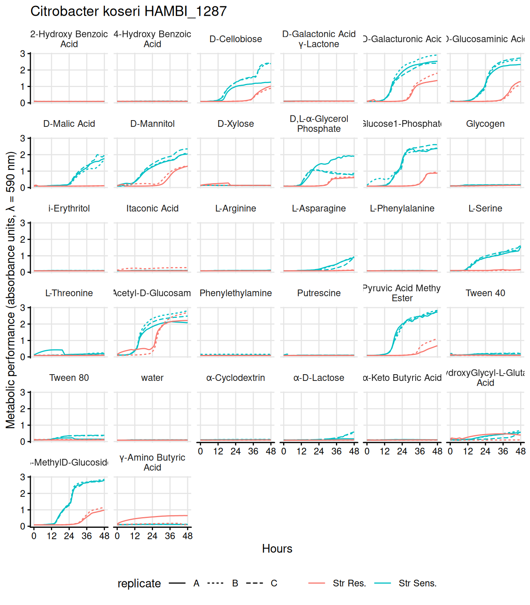
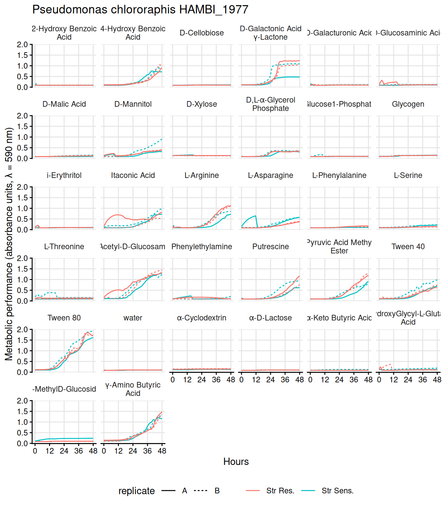
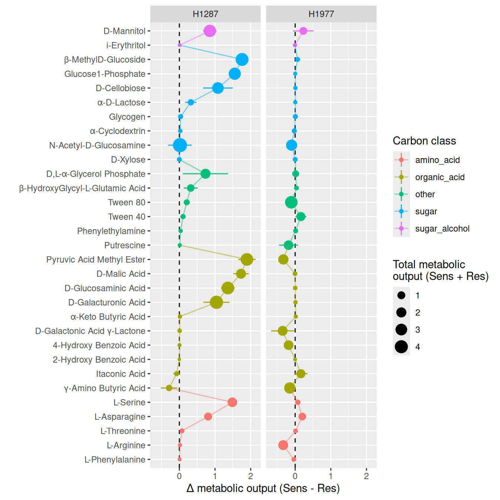

02.C Strain growth on Biolog Ecoplates
Carbon substrate use
1 Introduction
The Biolog Ecoplates utilize tetrazolium reduction to measure the metabolic response of bacterial cells to different carbon substrates. Oxidized tetrazolium salt is water soluble, colorless in solution, and can freely diffuse into bacterial cells. Once inside the cell, tetrazolium is reduced by reducing agents like NADH an NADPH which are generated via cellular metabolism and catabolism. Once reduced tetrazolium is transformed into pink product. This assay measures the accumulation of reduced tetrazolium (colormetric absorbance at 590 nm) and hence the accumulation and concentration of reducing agents from cellular metabolism. This process will reflect both the concentration of cells in solution and per-capita concentration of reductant from central metabolism. There is a useful overview of the Tetrazolium colorometric procedure available here.
In the prior step we imported, smoothed, and calculated summary statistics for the species growth on Biolog Ecoplates. Here we will do some simple plots and analysis of the growth data on different carbon sources from the ecoplates.
2 Setup
2.1 Libraries
2.2 Global variables
2.3 Read data
Growth summary data (e.g., AUC and growth rates).
Full growth curves.
Show/hide code
gcurves <- readr::read_tsv(here::here(data_processed, "gcurves_smooth.tsv")) %>%
arrange(strainID, well, plate_name) %>%
group_by(strainID, evolution, plate_name, `carbon source`, well) %>%
mutate(id = dplyr::cur_group_id()) %>%
group_by(strainID, evolution, `carbon source`) %>%
mutate(
replicate = case_when(
id == min(id) ~ 1,
id == max(id) ~ n_distinct(id),
TRUE ~ 2
)
) %>%
mutate(replicate = LETTERS[replicate]) %>%
dplyr::select(-id) %>%
ungroup() %>%
rename(carbon_source = `carbon source`) %>%
mutate(
hist = if_else(str_detect(evolution, "anc"), "Str Sens.", "Str Res.")
)Read which wells correspond to which compounds.
3 Plot ecoplate growth curves
3.1 HAMBI_1287
Show/hide code
p1287ecoplates_gcurves <- gcurves %>%
filter(strainID == "HAMBI_1287") %>%
ggplot() +
ggplot2::geom_line(aes(
x = hours,
y = OD600_rollmean,
color = hist,
linetype = replicate,
group = interaction(well, plate_name)
)) +
ggplot2::labs(x = "Hours", y = "OD600") +
ggplot2::scale_x_continuous(
breaks = seq(0, 48, 12),
labels = seq(0, 48, 12)
) +
labs(
y = "Metabolic performance (absorbance units, λ = 590 nm)",
x = "Hours",
color = "",
lintype = "Replicate",
title = "Citrobacter koseri HAMBI_1287"
) +
facet_wrap(
~carbon_source,
labeller = labeller(carbon_source = label_wrap_gen(20))
) +
theme_mct()
ggsave(
here::here(figs, "H1287_ecoplates_gcurves.svg"),
plot = p1287ecoplates_gcurves,
device = "svg",
width = 7,
height = 8
)
3.2 HAMBI_1977
Show/hide code
p1977ecoplates_gcurves <- gcurves %>%
filter(strainID == "HAMBI_1977") %>%
ggplot() +
ggplot2::geom_line(aes(
x = hours,
y = OD600_rollmean,
color = hist,
linetype = replicate,
group = interaction(well, plate_name)
)) +
ggplot2::labs(x = "Hours", y = "OD600") +
ggplot2::scale_x_continuous(
breaks = seq(0, 48, 12),
labels = seq(0, 48, 12)
) +
labs(
y = "Metabolic performance (absorbance units, λ = 590 nm)",
x = "Hours",
color = "",
lintype = "Replicate",
title = "Pseudomonas chlororaphis HAMBI_1977"
) +
facet_wrap(
~carbon_source,
labeller = labeller(carbon_source = label_wrap_gen(20))
) +
theme_mct()
ggsave(
here::here(figs, "H1977_ecoplates_gcurves.svg"),
plot = p1977ecoplates_gcurves,
device = "svg",
width = 7,
height = 8
)
4 Plot ecoplate growth summaries
The procedure is:
- for each replicate take the mean over all measurements within 0.05 units of the max
- subtract water from all values
- calculate mean and bootstrapped 95% CI across biological replicates
Show/hide code
gcurves_metabolic_pref <- gcurves %>%
mutate(
strainID2 = paste0(
toupper(stringr::str_sub(evolution, start = 1, end = 1)),
strain
)
) %>%
filter(hours > 24) %>%
group_by(strainID2, carbon_source, replicate) %>%
filter(OD600 >= max(OD600) - 0.05) %>%
summarize(OD600 = mean(OD600)) %>%
ungroup() %>%
pivot_wider(names_from = carbon_source, values_from = "OD600") %>%
pivot_longer(
cols = c(-strainID2, -replicate, -water),
names_to = "carbon_source",
values_to = "OD600"
) %>%
mutate(OD600_norm = if_else((OD600 - water) < 0, 0, OD600 - water)) %>%
summarize(
ggplot2::mean_cl_boot(OD600),
.by = c(strainID2, carbon_source)
)
gcurves_metabolic_pref_fmt <- gcurves_metabolic_pref %>%
mutate(
evolution = if_else(str_starts(strainID2, "A"), "Sens", "Res"),
strainID2 = str_replace(strainID2, "A|E", "H")
) %>%
pivot_wider(
id_cols = c(strainID2, carbon_source),
names_from = evolution,
values_from = c(y, ymin, ymax)
) %>%
mutate(
y_Sens = errors::set_errors(y_Sens, ymax_Sens - y_Sens),
y_Res = errors::set_errors(y_Res, ymax_Res - y_Res)
) %>%
mutate(delta_sens_res = y_Sens - y_Res) %>%
mutate(delta_sens_res_cl95 = errors::errors(delta_sens_res)) %>%
mutate(delta_sens_res = errors::drop_errors(delta_sens_res)) %>%
left_join(cc, by = join_by(carbon_source == compound)) %>%
mutate(
tot_met_output = errors::drop_errors(y_Sens + y_Res)
)Order the carbon substrates by compound class, then by the difference between the sensitive and resistant forms of HAMBI_1287.
Show/hide code
pcarbonindv <- gcurves_metabolic_pref_fmt %>%
mutate(carbon_source = factor(carbon_source, levels = carbon_levels)) %>%
ggplot(
aes(
x = carbon_source,
y = delta_sens_res,
color = class
),
) +
geom_hline(yintercept = 0, lty = 2) +
geom_point(aes(size = tot_met_output)) +
geom_linerange(aes(
ymin = delta_sens_res - delta_sens_res_cl95,
ymax = delta_sens_res + delta_sens_res_cl95
)) +
labs(
x = "",
y = "Δ metabolic output (Sens - Res)",
color = "Carbon class",
size = "Total metabolic\noutput (Sens + Res)"
) +
geom_line(aes(group = 1), alpha = 0.5) +
coord_flip() +
facet_grid(~strainID2)
ggsave(
here::here(figs, "summary_metabolic_output.svg"),
plot = pcarbonindv,
device = "svg",
width = 7,
height = 7
)